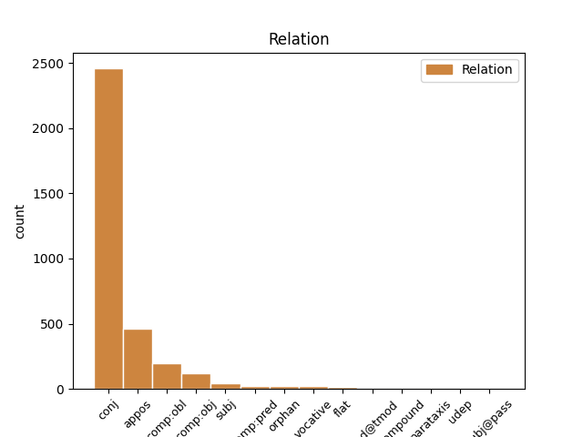
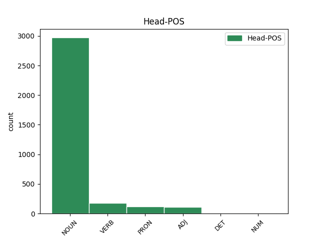
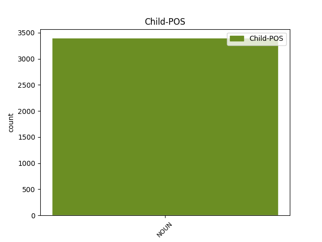

Distribution of features within this leaf



Agreement Rules sorted by frequency.
- When the dependent token is the conjunct(conj) of the head token, and the head token is NOUN and the dependent token is NOUN.
1 Prin _ _ _ _ 0 _ _ _
2 obștească _ _ _ _ 0 _ _ _
3 chibzuire _ _ _ _ 0 _ _ _
4 ce _ _ _ _ 0 _ _ _
5 s _ _ _ _ 0 _ _ _
6 -au _ _ _ _ 0 _ _ _
7 făcut _ _ _ _ 0 _ _ _
8 în _ _ _ _ 0 _ _ _
9 scris _ _ _ _ 0 _ _ _
10 prin _ _ _ _ 0 _ _ _
11 Anafora _ _ _ _ 0 _ _ _
12 de _ _ _ _ 0 _ _ _
13 sfinția _ _ _ _ 0 _ _ _
14 lor _ _ _ _ 0 _ _ _
15 Părinți _ _ _ _ 0 _ _ _
16 Arhierei _ _ _ _ 0 _ _ _
17 și _ _ _ _ 0 _ _ _
18 de _ _ _ _ 0 _ _ _
19 Dumnealor _ _ _ _ 0 _ _ _
20 cinstiții _ _ _ _ 0 _ _ _
21 și _ _ _ _ 0 _ _ _
22 credincioșii _ _ _ _ 0 _ _ _
23 Boerii _ _ _ _ 0 _ _ _
24 Veliți _ _ _ _ 0 _ _ _
25 ai _ _ _ _ 0 _ _ _
26 divanului _ _ _ _ 0 _ _ _
27 Domnii _ _ _ _ 0 _ _ _
28 meale _ _ _ _ 0 _ _ _
29 , _ _ _ _ 0 _ _ _
30 Halea hale NOUN Ncmsrn Case=Acc,Nom|Definite=Ind|Gender=Masc|Number=Sing 0 _ _ _
31 și _ _ _ _ 0 _ _ _
32 mazilii mazil NOUN Ncmpry Case=Acc,Nom|Definite=Def|Gender=Masc|Number=Plur 30 conj _ ref=COMPLETARE.9|SpaceAfter=No
33 . _ _ _ _ 0 _ _ _
1 Adecă _ _ _ _ 0 _ _ _
2 copiii _ _ _ _ 0 _ _ _
3 își _ _ _ _ 0 _ _ _
4 iau _ _ _ _ 0 _ _ _
5 părțile _ _ _ _ 0 _ _ _
6 lor _ _ _ _ 0 _ _ _
7 , _ _ _ _ 0 _ _ _
8 pre _ _ _ _ 0 _ _ _
9 care _ _ _ _ 0 _ _ _
10 sînt _ _ _ _ 0 _ _ _
11 stăpîni _ _ _ _ 0 _ _ _
12 desăvîrșit _ _ _ _ 0 _ _ _
13 , _ _ _ _ 0 _ _ _
14 luînd _ _ _ _ 0 _ _ _
15 asupra _ _ _ _ 0 _ _ _
16 lor _ _ _ _ 0 _ _ _
17 și _ _ _ _ 0 _ _ _
18 partea _ _ _ _ 0 _ _ _
19 sufletului _ _ _ _ 0 _ _ _
20 , _ _ _ _ 0 _ _ _
21 pentru _ _ _ _ 0 _ _ _
22 cheltuelile _ _ _ _ 0 _ _ _
23 îngropării _ _ _ _ 0 _ _ _
24 , _ _ _ _ 0 _ _ _
25 și _ _ _ _ 0 _ _ _
26 a _ _ _ _ 0 _ _ _
27 pomenirilor _ _ _ _ 0 _ _ _
28 mortului _ _ _ _ 0 _ _ _
29 sau _ _ _ _ 0 _ _ _
30 moartei _ _ _ _ 0 _ _ _
31 , _ _ _ _ 0 _ _ _
32 iară _ _ _ _ 0 _ _ _
33 soția _ _ _ _ 0 _ _ _
34 cea _ _ _ _ 0 _ _ _
35 vie _ _ _ _ 0 _ _ _
36 are _ _ _ _ 0 _ _ _
37 numai _ _ _ _ 0 _ _ _
38 hrisis hrisis NOUN Ncmsrn Case=Acc,Nom|Definite=Ind|Gender=Masc|Number=Sing 0 _ _ _
39 , _ _ _ _ 0 _ _ _
40 adecă _ _ _ _ 0 _ _ _
41 folosul folos NOUN Ncmsry Case=Acc,Nom|Definite=Def|Gender=Masc|Number=Sing 38 appos _ ref=PART_IV_CAP_3b.17.11b
42 părții _ _ _ _ 0 _ _ _
43 sale _ _ _ _ 0 _ _ _
44 . _ _ _ _ 0 _ _ _
1 O _ _ _ _ 0 _ _ _
2 parte _ _ _ _ 0 _ _ _
3 să _ _ _ _ 0 _ _ _
4 o _ _ _ _ 0 _ _ _
5 moștenească _ _ _ _ 0 _ _ _
6 obrazul _ _ _ _ 0 _ _ _
7 cel _ _ _ _ 0 _ _ _
8 viu _ _ _ _ 0 _ _ _
9 dintre _ _ _ _ 0 _ _ _
10 părinți _ _ _ _ 0 _ _ _
11 cu _ _ _ _ 0 _ _ _
12 desăvîrșită _ _ _ _ 0 _ _ _
13 stăpînire _ _ _ _ 0 _ _ _
14 , _ _ _ _ 0 _ _ _
15 însă _ _ _ _ 0 _ _ _
16 în _ _ _ _ 0 _ _ _
17 bani _ _ _ _ 0 _ _ _
18 gata _ _ _ _ 0 _ _ _
19 , _ _ _ _ 0 _ _ _
20 altă _ _ _ _ 0 _ _ _
21 parte _ _ _ _ 0 _ _ _
22 să _ _ _ _ 0 _ _ _
23 o _ _ _ _ 0 _ _ _
24 moștenească _ _ _ _ 0 _ _ _
25 rudele _ _ _ _ 0 _ _ _
26 cele _ _ _ _ 0 _ _ _
27 de _ _ _ _ 0 _ _ _
28 sus _ _ _ _ 0 _ _ _
29 ale _ _ _ _ 0 _ _ _
30 părintelui _ _ _ _ 0 _ _ _
31 celui _ _ _ _ 0 _ _ _
32 mort _ _ _ _ 0 _ _ _
33 , _ _ _ _ 0 _ _ _
34 sau _ _ _ _ 0 _ _ _
35 frații _ _ _ _ 0 _ _ _
36 numai _ _ _ _ 0 _ _ _
37 , _ _ _ _ 0 _ _ _
38 ( _ _ _ _ 0 _ _ _
39 de _ _ _ _ 0 _ _ _
40 vor _ _ _ _ 0 _ _ _
41 lipsi _ _ _ _ 0 _ _ _
42 rude _ _ _ _ 0 _ _ _
43 de _ _ _ _ 0 _ _ _
44 sus _ _ _ _ 0 _ _ _
45 ) _ _ _ _ 0 _ _ _
46 iară _ _ _ _ 0 _ _ _
47 cealaltă celălalt PRON Pd3fsr Case=Acc,Nom|Gender=Fem|Number=Sing|Person=3|PronType=Dem 0 _ _ _
48 a _ _ _ _ 0 _ _ _
49 treia _ _ _ _ 0 _ _ _
50 parte parte NOUN Ncfsrn Case=Acc,Nom|Definite=Ind|Gender=Fem|Number=Sing 47 appos _ ref=PART_IV_CAP_3b.18.3b
51 să _ _ _ _ 0 _ _ _
52 o _ _ _ _ 0 _ _ _
53 moștenească _ _ _ _ 0 _ _ _
54 sufletul _ _ _ _ 0 _ _ _
55 copilului _ _ _ _ 0 _ _ _
56 mort _ _ _ _ 0 _ _ _
57 , _ _ _ _ 0 _ _ _
58 care _ _ _ _ 0 _ _ _
59 parte _ _ _ _ 0 _ _ _
60 să _ _ _ _ 0 _ _ _
61 o _ _ _ _ 0 _ _ _
62 ia _ _ _ _ 0 _ _ _
63 tot _ _ _ _ 0 _ _ _
64 aceale _ _ _ _ 0 _ _ _
65 rude _ _ _ _ 0 _ _ _
66 , _ _ _ _ 0 _ _ _
67 ale _ _ _ _ 0 _ _ _
68 părintelui _ _ _ _ 0 _ _ _
69 celui _ _ _ _ 0 _ _ _
70 mort _ _ _ _ 0 _ _ _
71 , _ _ _ _ 0 _ _ _
72 pentru _ _ _ _ 0 _ _ _
73 cheltuiala _ _ _ _ 0 _ _ _
74 îngropării _ _ _ _ 0 _ _ _
75 și _ _ _ _ 0 _ _ _
76 a _ _ _ _ 0 _ _ _
77 pomenilor _ _ _ _ 0 _ _ _
78 . _ _ _ _ 0 _ _ _
1 Cînd _ _ _ _ 0 _ _ _
2 la _ _ _ _ 0 _ _ _
3 doi _ _ _ _ 0 _ _ _
4 inși _ _ _ _ 0 _ _ _
5 să _ _ _ _ 0 _ _ _
6 va _ _ _ _ 0 _ _ _
7 pune _ _ _ _ 0 _ _ _
8 lucrul _ _ _ _ 0 _ _ _
9 în _ _ _ _ 0 _ _ _
10 păstrare _ _ _ _ 0 _ _ _
11 , _ _ _ _ 0 _ _ _
12 iaste _ _ _ _ 0 _ _ _
13 datoriu _ _ _ _ 0 _ _ _
14 fiteșcare _ _ _ _ 0 _ _ _
15 dintr- _ _ _ _ 0 _ _ _
16 înșii _ _ _ _ 0 _ _ _
17 , _ _ _ _ 0 _ _ _
18 să _ _ _ _ 0 _ _ _
19 -l _ _ _ _ 0 _ _ _
20 dea _ _ _ _ 0 _ _ _
21 cînd _ _ _ _ 0 _ _ _
22 să _ _ _ _ 0 _ _ _
23 va _ _ _ _ 0 _ _ _
24 cere _ _ _ _ 0 _ _ _
25 , _ _ _ _ 0 _ _ _
26 și _ _ _ _ 0 _ _ _
27 de _ _ _ _ 0 _ _ _
28 -l _ _ _ _ 0 _ _ _
29 va _ _ _ _ 0 _ _ _
30 da _ _ _ _ 0 _ _ _
31 unul _ _ _ _ 0 _ _ _
32 dintr- _ _ _ _ 0 _ _ _
33 înșii _ _ _ _ 0 _ _ _
34 , _ _ _ _ 0 _ _ _
35 cu _ _ _ _ 0 _ _ _
36 lipsă _ _ _ _ 0 _ _ _
37 de _ _ _ _ 0 _ _ _
38 cît _ _ _ _ 0 _ _ _
39 au _ _ _ _ 0 _ _ _
40 fost _ _ _ _ 0 _ _ _
41 , _ _ _ _ 0 _ _ _
42 datoriu _ _ _ _ 0 _ _ _
43 iaste _ _ _ _ 0 _ _ _
44 și _ _ _ _ 0 _ _ _
45 acel acela PRON Pd3msr Case=Acc,Nom|Gender=Masc|Number=Sing|Person=3|PronType=Dem 0 _ _ _
46 ce _ _ _ _ 0 _ _ _
47 l- _ _ _ _ 0 _ _ _
48 au _ _ _ _ 0 _ _ _
49 dat _ _ _ _ 0 _ _ _
50 , _ _ _ _ 0 _ _ _
51 și _ _ _ _ 0 _ _ _
52 celalalt _ _ _ _ 0 _ _ _
53 păstrătoriu păstrător NOUN Ncmsrn Case=Acc,Nom|Definite=Ind|Gender=Masc|Number=Sing 45 conj _ ref=PART_III_CAP_22.16
54 lipsa _ _ _ _ 0 _ _ _
55 lucrului _ _ _ _ 0 _ _ _
56 . _ _ _ _ 0 _ _ _
1 În _ _ _ _ 0 _ _ _
2 scurt _ _ _ _ 0 _ _ _
3 care _ _ _ _ 0 _ _ _
4 dintre _ _ _ _ 0 _ _ _
5 cei _ _ _ _ 0 _ _ _
6 ce _ _ _ _ 0 _ _ _
7 să _ _ _ _ 0 _ _ _
8 judecă _ _ _ _ 0 _ _ _
9 să _ _ _ _ 0 _ _ _
10 va _ _ _ _ 0 _ _ _
11 dovedi _ _ _ _ 0 _ _ _
12 că _ _ _ _ 0 _ _ _
13 fiindcă _ _ _ _ 0 _ _ _
14 era _ _ _ _ 0 _ _ _
15 datoriu _ _ _ _ 0 _ _ _
16 , _ _ _ _ 0 _ _ _
17 și _ _ _ _ 0 _ _ _
18 cît _ _ _ _ 0 _ _ _
19 era _ _ _ _ 0 _ _ _
20 datoriu dator ADJ Afpmsrn Case=Acc,Nom|Definite=Ind|Degree=Pos|Gender=Masc|Number=Sing 0 _ _ _
21 protivnicului potrivnic NOUN Ncmsoy Case=Dat,Gen|Definite=Def|Gender=Masc|Number=Sing 20 comp:obl _ ref=PART_V_CAP_3.11
22 său _ _ _ _ 0 _ _ _
23 , _ _ _ _ 0 _ _ _
24 nu _ _ _ _ 0 _ _ _
25 i- _ _ _ _ 0 _ _ _
26 au _ _ _ _ 0 _ _ _
27 făcut _ _ _ _ 0 _ _ _
28 îndestulare _ _ _ _ 0 _ _ _
29 , _ _ _ _ 0 _ _ _
30 acela _ _ _ _ 0 _ _ _
31 să _ _ _ _ 0 _ _ _
32 să _ _ _ _ 0 _ _ _
33 îndatoreze _ _ _ _ 0 _ _ _
34 să _ _ _ _ 0 _ _ _
35 -i _ _ _ _ 0 _ _ _
36 plătească _ _ _ _ 0 _ _ _
37 și _ _ _ _ 0 _ _ _
38 cheltuiala _ _ _ _ 0 _ _ _
39 judecății _ _ _ _ 0 _ _ _
40 . _ _ _ _ 0 _ _ _
1 Zestre _ _ _ _ 0 _ _ _
2 să _ _ _ _ 0 _ _ _
3 zice _ _ _ _ 0 _ _ _
4 averea _ _ _ _ 0 _ _ _
5 fămei _ _ _ _ 0 _ _ _
6 , _ _ _ _ 0 _ _ _
7 ce _ _ _ _ 0 _ _ _
8 la _ _ _ _ 0 _ _ _
9 căsătorie _ _ _ _ 0 _ _ _
10 dă _ _ _ _ 0 _ _ _
11 bărbatului _ _ _ _ 0 _ _ _
12 ei _ _ _ _ 0 _ _ _
13 , _ _ _ _ 0 _ _ _
14 cu _ _ _ _ 0 _ _ _
15 tocmeală _ _ _ _ 0 _ _ _
16 , _ _ _ _ 0 _ _ _
17 ca _ _ _ _ 0 _ _ _
18 ea _ _ _ _ 0 _ _ _
19 să _ _ _ _ 0 _ _ _
20 fie _ _ _ _ 0 _ _ _
21 Stăpînă stăpână NOUN Ncfsrn Case=Acc,Nom|Definite=Ind|Gender=Fem|Number=Sing 0 _ _ _
22 zestrii zestre NOUN Ncfprn Case=Acc,Nom|Definite=Ind|Gender=Fem|Number=Plur 21 comp:obl _ ref=PART_III_CAP_16b.9
23 totdeauna _ _ _ _ 0 _ _ _
24 , _ _ _ _ 0 _ _ _
25 iară _ _ _ _ 0 _ _ _
26 el _ _ _ _ 0 _ _ _
27 să _ _ _ _ 0 _ _ _
28 -i _ _ _ _ 0 _ _ _
29 ia _ _ _ _ 0 _ _ _
30 venitul _ _ _ _ 0 _ _ _
31 totdeauna _ _ _ _ 0 _ _ _
32 . _ _ _ _ 0 _ _ _
1 Cînd _ _ _ _ 0 _ _ _
2 cel _ _ _ _ 0 _ _ _
3 ce _ _ _ _ 0 _ _ _
4 face _ _ _ _ 0 _ _ _
5 diiată _ _ _ _ 0 _ _ _
6 va _ _ _ _ 0 _ _ _
7 dărui _ _ _ _ 0 _ _ _
8 legat _ _ _ _ 0 _ _ _
9 vreun _ _ _ _ 0 _ _ _
10 lucru _ _ _ _ 0 _ _ _
11 strein _ _ _ _ 0 _ _ _
12 știindu _ _ _ _ 0 _ _ _
13 -l _ _ _ _ 0 _ _ _
14 , _ _ _ _ 0 _ _ _
15 și _ _ _ _ 0 _ _ _
16 pre _ _ _ _ 0 _ _ _
17 urmă _ _ _ _ 0 _ _ _
18 judecîndu _ _ _ _ 0 _ _ _
19 -se _ _ _ _ 0 _ _ _
20 Stăpînul _ _ _ _ 0 _ _ _
21 și _ _ _ _ 0 _ _ _
22 -l _ _ _ _ 0 _ _ _
23 va _ _ _ _ 0 _ _ _
24 lua _ _ _ _ 0 _ _ _
25 , _ _ _ _ 0 _ _ _
26 atunci _ _ _ _ 0 _ _ _
27 moștenitoriul _ _ _ _ 0 _ _ _
28 să _ _ _ _ 0 _ _ _
29 îndatorează _ _ _ _ 0 _ _ _
30 să _ _ _ _ 0 _ _ _
31 răspunză _ _ _ _ 0 _ _ _
32 legatarului _ _ _ _ 0 _ _ _
33 prețul _ _ _ _ 0 _ _ _
34 acelui _ _ _ _ 0 _ _ _
35 lucru _ _ _ _ 0 _ _ _
36 , _ _ _ _ 0 _ _ _
37 iar _ _ _ _ 0 _ _ _
38 cînd _ _ _ _ 0 _ _ _
39 cel _ _ _ _ 0 _ _ _
40 ce _ _ _ _ 0 _ _ _
41 au _ _ _ _ 0 _ _ _
42 făcut _ _ _ _ 0 _ _ _
43 diiată _ _ _ _ 0 _ _ _
44 va _ _ _ _ 0 _ _ _
45 fi _ _ _ _ 0 _ _ _
46 dăruit dărui VERB Vmp--sm-p Gender=Masc|Number=Sing|Polarity=Pos|VerbForm=Part 0 _ _ _
47 lucru lucru NOUN Ncmsrn Case=Acc,Nom|Definite=Ind|Gender=Masc|Number=Sing 46 comp:obj _ ref=PART_IV_CAP_4.9
48 strein _ _ _ _ 0 _ _ _
49 neștiindu _ _ _ _ 0 _ _ _
50 -l _ _ _ _ 0 _ _ _
51 , _ _ _ _ 0 _ _ _
52 și _ _ _ _ 0 _ _ _
53 lucrul _ _ _ _ 0 _ _ _
54 acela _ _ _ _ 0 _ _ _
55 să _ _ _ _ 0 _ _ _
56 va _ _ _ _ 0 _ _ _
57 lua _ _ _ _ 0 _ _ _
58 de _ _ _ _ 0 _ _ _
59 Stăpîn _ _ _ _ 0 _ _ _
60 cu _ _ _ _ 0 _ _ _
61 judecată _ _ _ _ 0 _ _ _
62 , _ _ _ _ 0 _ _ _
63 atunci _ _ _ _ 0 _ _ _
64 moștenitoriul _ _ _ _ 0 _ _ _
65 nu _ _ _ _ 0 _ _ _
66 e _ _ _ _ 0 _ _ _
67 datoriu _ _ _ _ 0 _ _ _
68 nimic _ _ _ _ 0 _ _ _
69 . _ _ _ _ 0 _ _ _
1 Fiind _ _ _ _ 0 _ _ _
2 doi _ _ _ _ 0 _ _ _
3 , _ _ _ _ 0 _ _ _
4 sau _ _ _ _ 0 _ _ _
5 mulți _ _ _ _ 0 _ _ _
6 , _ _ _ _ 0 _ _ _
7 împreună _ _ _ _ 0 _ _ _
8 epitropi _ _ _ _ 0 _ _ _
9 , _ _ _ _ 0 _ _ _
10 de _ _ _ _ 0 _ _ _
11 li li NOUN Ncmprn Case=Acc,Nom|Definite=Ind|Gender=Masc|Number=Plur 14 comp:obl _ ref=PART_III_CAP_21.32
12 s _ _ _ _ 0 _ _ _
13 -au _ _ _ _ 0 _ _ _
14 orînduit orândui VERB Vmp--sm-p Gender=Masc|Number=Sing|Polarity=Pos|VerbForm=Part 0 _ _ _
15 în _ _ _ _ 0 _ _ _
16 Diiată _ _ _ _ 0 _ _ _
17 , _ _ _ _ 0 _ _ _
18 sau _ _ _ _ 0 _ _ _
19 de _ _ _ _ 0 _ _ _
20 la _ _ _ _ 0 _ _ _
21 Judecată _ _ _ _ 0 _ _ _
22 preste _ _ _ _ 0 _ _ _
23 ce _ _ _ _ 0 _ _ _
24 , _ _ _ _ 0 _ _ _
25 și _ _ _ _ 0 _ _ _
26 preste _ _ _ _ 0 _ _ _
27 ce _ _ _ _ 0 _ _ _
28 să _ _ _ _ 0 _ _ _
29 fie _ _ _ _ 0 _ _ _
30 Epitropi _ _ _ _ 0 _ _ _
31 ; _ _ _ _ 0 _ _ _
32 atunci _ _ _ _ 0 _ _ _
33 fieștecare _ _ _ _ 0 _ _ _
34 dintr- _ _ _ _ 0 _ _ _
35 înșii _ _ _ _ 0 _ _ _
36 iaste _ _ _ _ 0 _ _ _
37 datoriu _ _ _ _ 0 _ _ _
38 pentru _ _ _ _ 0 _ _ _
39 partea _ _ _ _ 0 _ _ _
40 ce _ _ _ _ 0 _ _ _
41 i _ _ _ _ 0 _ _ _
42 s _ _ _ _ 0 _ _ _
43 -au _ _ _ _ 0 _ _ _
44 dat _ _ _ _ 0 _ _ _
45 lui _ _ _ _ 0 _ _ _
46 în _ _ _ _ 0 _ _ _
47 seamă _ _ _ _ 0 _ _ _
48 , _ _ _ _ 0 _ _ _
49 iară _ _ _ _ 0 _ _ _
50 de _ _ _ _ 0 _ _ _
51 sînt _ _ _ _ 0 _ _ _
52 toți _ _ _ _ 0 _ _ _
53 fără _ _ _ _ 0 _ _ _
54 osebire _ _ _ _ 0 _ _ _
55 orînduiți _ _ _ _ 0 _ _ _
56 preste _ _ _ _ 0 _ _ _
57 toată _ _ _ _ 0 _ _ _
58 avearea _ _ _ _ 0 _ _ _
59 , _ _ _ _ 0 _ _ _
60 atunci _ _ _ _ 0 _ _ _
61 toți _ _ _ _ 0 _ _ _
62 pentru _ _ _ _ 0 _ _ _
63 toate _ _ _ _ 0 _ _ _
64 , _ _ _ _ 0 _ _ _
65 și _ _ _ _ 0 _ _ _
66 fieștecaew _ _ _ _ 0 _ _ _
67 în _ _ _ _ 0 _ _ _
68 parte _ _ _ _ 0 _ _ _
69 pentru _ _ _ _ 0 _ _ _
70 toată _ _ _ _ 0 _ _ _
71 sînt _ _ _ _ 0 _ _ _
72 datori _ _ _ _ 0 _ _ _
73 . _ _ _ _ 0 _ _ _
1 Şi _ _ _ _ 0 _ _ _
2 această _ _ _ _ 0 _ _ _
3 pasăre pasăre NOUN Ncfsrn Case=Acc,Nom|Definite=Ind|Gender=Fem|Number=Sing 5 subj _ SpaceAfter=No
4 , _ _ _ _ 0 _ _ _
5 tocmită tocmi VERB Vmp--sf-p--r Case=Acc,Nom|Gender=Fem|Number=Sing|Polarity=Pos|VerbForm=Part 0 _ _ _
6 că _ _ _ _ 0 _ _ _
7 niceodată _ _ _ _ 0 _ _ _
8 nu _ _ _ _ 0 _ _ _
9 se _ _ _ _ 0 _ _ _
10 mută _ _ _ _ 0 _ _ _
11 , _ _ _ _ 0 _ _ _
12 numai _ _ _ _ 0 _ _ _
13 stă _ _ _ _ 0 _ _ _
14 , _ _ _ _ 0 _ _ _
15 căce- _ _ _ _ 0 _ _ _
16 ș _ _ _ _ 0 _ _ _
17 știe _ _ _ _ 0 _ _ _
18 firea _ _ _ _ 0 _ _ _
19 , _ _ _ _ 0 _ _ _
20 că _ _ _ _ 0 _ _ _
21 va _ _ _ _ 0 _ _ _
22 să _ _ _ _ 0 _ _ _
23 se _ _ _ _ 0 _ _ _
24 întinerească _ _ _ _ 0 _ _ _
25 . _ _ _ _ 0 _ _ _
1 Şi _ _ _ _ 0 _ _ _
2 ceaia _ _ _ _ 0 _ _ _
3 au _ _ _ _ 0 _ _ _
4 fost _ _ _ _ 0 _ _ _
5 mulți _ _ _ _ 0 _ _ _
6 făcuți face VERB Vmp--pm-p Gender=Masc|Number=Plur|Polarity=Pos|VerbForm=Part 0 _ _ _
7 preuți preot NOUN Ncmprn Case=Acc,Nom|Definite=Ind|Gender=Masc|Number=Plur 6 comp:pred _ ref=PAVEL_EVREI_7.23|SpaceAfter=No
8 , _ _ _ _ 0 _ _ _
9 pentru _ _ _ _ 0 _ _ _
10 că _ _ _ _ 0 _ _ _
11 nu _ _ _ _ 0 _ _ _
12 putea _ _ _ _ 0 _ _ _
13 rămînea _ _ _ _ 0 _ _ _
14 de _ _ _ _ 0 _ _ _
15 moarte _ _ _ _ 0 _ _ _
16 . _ _ _ _ 0 _ _ _
1 Sora _ _ _ _ 0 _ _ _
2 mijlocie _ _ _ _ 0 _ _ _
3 , _ _ _ _ 0 _ _ _
4 Leliţa leliță NOUN Ncfsry Case=Acc,Nom|Definite=Def|Gender=Fem|Number=Sing 0 _ _ _
5 Mărie Maria NOUN Ncfsrn Case=Acc,Nom|Definite=Ind|Gender=Fem|Number=Sing 4 flat _ SpaceAfter=No
6 , _ _ _ _ 0 _ _ _
7 Plină _ _ _ _ 0 _ _ _
8 -i _ _ _ _ 0 _ _ _
9 de _ _ _ _ 0 _ _ _
10 trufie _ _ _ _ 0 _ _ _
11 Cu _ _ _ _ 0 _ _ _
12 a _ _ _ _ 0 _ _ _
13 sale _ _ _ _ 0 _ _ _
14 gene _ _ _ _ 0 _ _ _
15 , _ _ _ _ 0 _ _ _
16 Ochișori _ _ _ _ 0 _ _ _
17 , _ _ _ _ 0 _ _ _
18 sprîncene _ _ _ _ 0 _ _ _
19 , _ _ _ _ 0 _ _ _
20 Că _ _ _ _ 0 _ _ _
21 de _ _ _ _ 0 _ _ _
22 -i _ _ _ _ 0 _ _ _
23 cauţi _ _ _ _ 0 _ _ _
24 în _ _ _ _ 0 _ _ _
25 ochi _ _ _ _ 0 _ _ _
26 , _ _ _ _ 0 _ _ _
27 Mori _ _ _ _ 0 _ _ _
28 ca _ _ _ _ 0 _ _ _
29 de _ _ _ _ 0 _ _ _
30 diochi _ _ _ _ 0 _ _ _
31 . _ _ _ _ 0 _ _ _
1 Pentru _ _ _ _ 0 _ _ _
2 daruri _ _ _ _ 0 _ _ _
3 dinnaintea dinaintea NOUN Ncfsry Case=Acc,Nom|Definite=Def|Gender=Fem|Number=Sing 4 comp:obj _ ref=PART_V_CAP_1.7y
4 nunții nuntă NOUN Ncfsoy Case=Dat,Gen|Definite=Def|Gender=Fem|Number=Sing 0 _ _ _
5 ca _ _ _ _ 0 _ _ _
6 și _ _ _ _ 0 _ _ _
7 pentru _ _ _ _ 0 _ _ _
8 zestre _ _ _ _ 0 _ _ _
9 . _ _ _ _ 0 _ _ _
1 Care _ _ _ _ 0 _ _ _
2 va _ _ _ _ 0 _ _ _
3 omorî _ _ _ _ 0 _ _ _
4 dobitocul _ _ _ _ 0 _ _ _
5 altuia _ _ _ _ 0 _ _ _
6 , _ _ _ _ 0 _ _ _
7 iaste _ _ _ _ 0 _ _ _
8 datoriu dator ADJ Afpmsrn Case=Acc,Nom|Definite=Ind|Degree=Pos|Gender=Masc|Number=Sing 0 _ _ _
9 prețul preț NOUN Ncmsry Case=Acc,Nom|Definite=Def|Gender=Masc|Number=Sing 8 comp:obj _ ref=PART_V_CAP_11.4
10 acelui _ _ _ _ 0 _ _ _
11 dobitoc _ _ _ _ 0 _ _ _
12 . _ _ _ _ 0 _ _ _
1 L- _ _ _ _ 0 _ _ _
2 am _ _ _ _ 0 _ _ _
3 văzut _ _ _ _ 0 _ _ _
4 la _ _ _ _ 0 _ _ _
5 crâșma _ _ _ _ 0 _ _ _
6 Stanii _ _ _ _ 0 _ _ _
7 , _ _ _ _ 0 _ _ _
8 Unde _ _ _ _ 0 _ _ _
9 beau _ _ _ _ 0 _ _ _
10 drumeții _ _ _ _ 0 _ _ _
11 banii _ _ _ _ 0 _ _ _
12 Și _ _ _ _ 0 _ _ _
13 voinicii voinic NOUN Ncmpry Case=Acc,Nom|Definite=Def|Gender=Masc|Number=Plur 0 _ _ _
14 gologanii gologan NOUN Ncmpry Case=Acc,Nom|Definite=Def|Gender=Masc|Number=Plur 13 orphan _ SpaceAfter=No
15 . _ _ _ _ 0 _ _ _
1 Toate _ _ _ _ 0 _ _ _
2 diețile _ _ _ _ 0 _ _ _
3 ( _ _ _ _ 0 _ _ _
4 de _ _ _ _ 0 _ _ _
5 nu _ _ _ _ 0 _ _ _
6 vor _ _ _ _ 0 _ _ _
7 fi _ _ _ _ 0 _ _ _
8 scrise _ _ _ _ 0 _ _ _
9 de _ _ _ _ 0 _ _ _
10 tot _ _ _ _ 0 _ _ _
11 de _ _ _ _ 0 _ _ _
12 însuși _ _ _ _ 0 _ _ _
13 cei _ _ _ _ 0 _ _ _
14 ce _ _ _ _ 0 _ _ _
15 le _ _ _ _ 0 _ _ _
16 fac _ _ _ _ 0 _ _ _
17 ) _ _ _ _ 0 _ _ _
18 să _ _ _ _ 0 _ _ _
19 să _ _ _ _ 0 _ _ _
20 iscălească _ _ _ _ 0 _ _ _
21 de _ _ _ _ 0 _ _ _
22 cei _ _ _ _ 0 _ _ _
23 ce _ _ _ _ 0 _ _ _
24 le _ _ _ _ 0 _ _ _
25 fac _ _ _ _ 0 _ _ _
26 , _ _ _ _ 0 _ _ _
27 și _ _ _ _ 0 _ _ _
28 să _ _ _ _ 0 _ _ _
29 să _ _ _ _ 0 _ _ _
30 adevereaze _ _ _ _ 0 _ _ _
31 cu _ _ _ _ 0 _ _ _
32 trei _ _ _ _ 0 _ _ _
33 martori _ _ _ _ 0 _ _ _
34 singuri _ _ _ _ 0 _ _ _
35 văzători văzător ADJ Afpmprn Case=Acc,Nom|Definite=Ind|Degree=Pos|Gender=Masc|Number=Plur 0 _ _ _
36 , _ _ _ _ 0 _ _ _
37 sau _ _ _ _ 0 _ _ _
38 singuri _ _ _ _ 0 _ _ _
39 auzitori auzitor NOUN Ncmprn Case=Acc,Nom|Definite=Ind|Gender=Masc|Number=Plur 35 conj _ ref=PART_V_CAP_2a.7|SpaceAfter=No
40 , _ _ _ _ 0 _ _ _
41 sau _ _ _ _ 0 _ _ _
42 de _ _ _ _ 0 _ _ _
43 Arhiereul _ _ _ _ 0 _ _ _
44 locului _ _ _ _ 0 _ _ _
45 , _ _ _ _ 0 _ _ _
46 sau _ _ _ _ 0 _ _ _
47 de _ _ _ _ 0 _ _ _
48 judecătoriu _ _ _ _ 0 _ _ _
49 . _ _ _ _ 0 _ _ _
1 Prea _ _ _ _ 0 _ _ _
2 Înălțate _ _ _ _ 0 _ _ _
3 Doamne _ _ _ _ 0 _ _ _
4 ! _ _ _ _ 0 _ _ _
5 După _ _ _ _ 0 _ _ _
6 luminată _ _ _ _ 0 _ _ _
7 porunca _ _ _ _ 0 _ _ _
8 Mării _ _ _ _ 0 _ _ _
9 tale _ _ _ _ 0 _ _ _
10 adunîndu _ _ _ _ 0 _ _ _
11 -ne _ _ _ _ 0 _ _ _
12 în _ _ _ _ 0 _ _ _
13 multe _ _ _ _ 0 _ _ _
14 rînduri _ _ _ _ 0 _ _ _
15 cu _ _ _ _ 0 _ _ _
16 toții _ _ _ _ 0 _ _ _
17 la _ _ _ _ 0 _ _ _
18 un _ _ _ _ 0 _ _ _
19 loc _ _ _ _ 0 _ _ _
20 , _ _ _ _ 0 _ _ _
21 am _ _ _ _ 0 _ _ _
22 cetit _ _ _ _ 0 _ _ _
23 cu _ _ _ _ 0 _ _ _
24 luare luare NOUN Ncfsrn Case=Acc,Nom|Definite=Ind|Gender=Fem|Number=Sing 0 _ _ _
25 aminte aminte NOUN Ncfsrn Case=Acc,Nom|Definite=Ind|Gender=Fem|Number=Sing 24 compound _ ref=ANAFORA.1
26 Pravila _ _ _ _ 0 _ _ _
27 ce _ _ _ _ 0 _ _ _
28 s _ _ _ _ 0 _ _ _
29 -au _ _ _ _ 0 _ _ _
30 alcătuit _ _ _ _ 0 _ _ _
31 de _ _ _ _ 0 _ _ _
32 cătră _ _ _ _ 0 _ _ _
33 Măria _ _ _ _ 0 _ _ _
34 ta _ _ _ _ 0 _ _ _
35 , _ _ _ _ 0 _ _ _
36 și _ _ _ _ 0 _ _ _
37 ne _ _ _ _ 0 _ _ _
38 pliroforisirăm _ _ _ _ 0 _ _ _
39 , _ _ _ _ 0 _ _ _
40 că _ _ _ _ 0 _ _ _
41 alcătuirea _ _ _ _ 0 _ _ _
42 aceștii _ _ _ _ 0 _ _ _
43 Pravili _ _ _ _ 0 _ _ _
44 este _ _ _ _ 0 _ _ _
45 o _ _ _ _ 0 _ _ _
46 deslușire _ _ _ _ 0 _ _ _
47 a _ _ _ _ 0 _ _ _
48 Pravililor _ _ _ _ 0 _ _ _
49 Împărătești _ _ _ _ 0 _ _ _
50 , _ _ _ _ 0 _ _ _
51 ce _ _ _ _ 0 _ _ _
52 să _ _ _ _ 0 _ _ _
53 obicinuesc _ _ _ _ 0 _ _ _
54 aici _ _ _ _ 0 _ _ _
55 în _ _ _ _ 0 _ _ _
56 pămîntul _ _ _ _ 0 _ _ _
57 nostru _ _ _ _ 0 _ _ _
58 , _ _ _ _ 0 _ _ _
59 și _ _ _ _ 0 _ _ _
60 a _ _ _ _ 0 _ _ _
61 vechilor _ _ _ _ 0 _ _ _
62 , _ _ _ _ 0 _ _ _
63 și _ _ _ _ 0 _ _ _
64 a _ _ _ _ 0 _ _ _
65 canonisitelor _ _ _ _ 0 _ _ _
66 obiceaiuri _ _ _ _ 0 _ _ _
67 ale _ _ _ _ 0 _ _ _
68 pămîntului _ _ _ _ 0 _ _ _
69 , _ _ _ _ 0 _ _ _
70 nefiind _ _ _ _ 0 _ _ _
71 împotrivitoare _ _ _ _ 0 _ _ _
72 celor _ _ _ _ 0 _ _ _
73 vechi _ _ _ _ 0 _ _ _
74 urmate _ _ _ _ 0 _ _ _
75 pînă _ _ _ _ 0 _ _ _
76 acum _ _ _ _ 0 _ _ _
77 . _ _ _ _ 0 _ _ _
1 Foaie foaie NOUN Ncfsrn Case=Acc,Nom|Definite=Ind|Gender=Fem|Number=Sing 8 vocative _ _
2 verde _ _ _ _ 0 _ _ _
3 ș- _ _ _ _ 0 _ _ _
4 o _ _ _ _ 0 _ _ _
5 cafea _ _ _ _ 0 _ _ _
6 , _ _ _ _ 0 _ _ _
7 Bună _ _ _ _ 0 _ _ _
8 ziua zi NOUN Ncfsry Case=Acc,Nom|Definite=Def|Gender=Fem|Number=Sing 0 _ _ _
9 , _ _ _ _ 0 _ _ _
10 Nistrule _ _ _ _ 0 _ _ _
11 , _ _ _ _ 0 _ _ _
12 Ce _ _ _ _ 0 _ _ _
13 mai _ _ _ _ 0 _ _ _
14 faci _ _ _ _ 0 _ _ _
15 , _ _ _ _ 0 _ _ _
16 drăguțule _ _ _ _ 0 _ _ _
17 ? _ _ _ _ 0 _ _ _
1 Solomon _ _ _ _ 0 _ _ _
2 zise _ _ _ _ 0 _ _ _
3 : _ _ _ _ 0 _ _ _
4 " _ _ _ _ 0 _ _ _
5 Niminea _ _ _ _ 0 _ _ _
6 nu _ _ _ _ 0 _ _ _
7 va _ _ _ _ 0 _ _ _
8 băga _ _ _ _ 0 _ _ _
9 foc _ _ _ _ 0 _ _ _
10 în _ _ _ _ 0 _ _ _
11 sîn _ _ _ _ 0 _ _ _
12 și _ _ _ _ 0 _ _ _
13 să _ _ _ _ 0 _ _ _
14 nu _ _ _ _ 0 _ _ _
15 -i _ _ _ _ 0 _ _ _
16 arză arză NOUN Ncfsrn Case=Acc,Nom|Definite=Ind|Gender=Fem|Number=Sing 0 _ _ _
17 hainele haină NOUN Ncfpry Case=Acc,Nom|Definite=Def|Gender=Fem|Number=Plur 16 subj _ SpaceAfter=No
18 ” _ _ _ _ 0 _ _ _
19 . _ _ _ _ 0 _ _ _
1 Cînd _ _ _ _ 0 _ _ _
2 vreun _ _ _ _ 0 _ _ _
3 frate _ _ _ _ 0 _ _ _
4 sau _ _ _ _ 0 _ _ _
5 vreo _ _ _ _ 0 _ _ _
6 sor _ _ _ _ 0 _ _ _
7 murind _ _ _ _ 0 _ _ _
8 fără _ _ _ _ 0 _ _ _
9 moștenitori _ _ _ _ 0 _ _ _
10 n- _ _ _ _ 0 _ _ _
11 au _ _ _ _ 0 _ _ _
12 nici _ _ _ _ 0 _ _ _
13 frați _ _ _ _ 0 _ _ _
14 , _ _ _ _ 0 _ _ _
15 sau _ _ _ _ 0 _ _ _
16 surori _ _ _ _ 0 _ _ _
17 buni _ _ _ _ 0 _ _ _
18 , _ _ _ _ 0 _ _ _
19 nici _ _ _ _ 0 _ _ _
20 nepoți _ _ _ _ 0 _ _ _
21 din _ _ _ _ 0 _ _ _
22 frați _ _ _ _ 0 _ _ _
23 sau _ _ _ _ 0 _ _ _
24 surori _ _ _ _ 0 _ _ _
25 buni _ _ _ _ 0 _ _ _
26 , _ _ _ _ 0 _ _ _
27 atunci _ _ _ _ 0 _ _ _
28 frații frate NOUN Ncmpry Case=Acc,Nom|Definite=Def|Gender=Masc|Number=Plur 41 subj _ ref=PART_IV_CAP_3b.19.6
29 sau _ _ _ _ 0 _ _ _
30 surorile _ _ _ _ 0 _ _ _
31 cei _ _ _ _ 0 _ _ _
32 vitregi _ _ _ _ 0 _ _ _
33 buni _ _ _ _ 0 _ _ _
34 de _ _ _ _ 0 _ _ _
35 tată _ _ _ _ 0 _ _ _
36 , _ _ _ _ 0 _ _ _
37 sau _ _ _ _ 0 _ _ _
38 de _ _ _ _ 0 _ _ _
39 mamă _ _ _ _ 0 _ _ _
40 , _ _ _ _ 0 _ _ _
41 moștenesc moștenesc ADJ Afpmsrn Case=Acc,Nom|Definite=Ind|Degree=Pos|Gender=Masc|Number=Sing 0 _ _ _
42 de _ _ _ _ 0 _ _ _
43 o _ _ _ _ 0 _ _ _
44 potrivă _ _ _ _ 0 _ _ _
45 . _ _ _ _ 0 _ _ _
1 Orice _ _ _ _ 0 _ _ _
2 obraz _ _ _ _ 0 _ _ _
3 poate _ _ _ _ 0 _ _ _
4 să _ _ _ _ 0 _ _ _
5 fie _ _ _ _ 0 _ _ _
6 eretocritis eretocritis VERB Vmp--sm-p Gender=Masc|Number=Sing|Polarity=Pos|VerbForm=Part 0 _ _ _
7 adecă _ _ _ _ 0 _ _ _
8 judecător judecător NOUN Ncmsrn Case=Acc,Nom|Definite=Ind|Gender=Masc|Number=Sing 6 appos _ ref=PART_III_CAP_18.4a
9 ales _ _ _ _ 0 _ _ _
10 . _ _ _ _ 0 _ _ _
1 Lelea lele NOUN Ncfsry Case=Acc,Nom|Definite=Def|Gender=Fem|Number=Sing 0 _ _ _
2 Floarea _ _ _ _ 0 _ _ _
3 - _ _ _ _ 0 _ _ _
4 Bună _ _ _ _ 0 _ _ _
5 cale cale NOUN Ncfsrn Case=Acc,Nom|Definite=Ind|Gender=Fem|Number=Sing 1 parataxis _ Rhyme=ID8|SpaceAfter=No|Type=Imperf
6 , _ _ _ _ 0 _ _ _
7 lele _ _ _ _ 0 _ _ _
8 Floare _ _ _ _ 0 _ _ _
9 ! _ _ _ _ 0 _ _ _
1 Cînd _ _ _ _ 0 _ _ _
2 pentru _ _ _ _ 0 _ _ _
3 aceaiași _ _ _ _ 0 _ _ _
4 provlimă _ _ _ _ 0 _ _ _
5 să _ _ _ _ 0 _ _ _
6 pune _ _ _ _ 0 _ _ _
7 înainte _ _ _ _ 0 _ _ _
8 de _ _ _ _ 0 _ _ _
9 cătră _ _ _ _ 0 _ _ _
10 unul _ _ _ _ 0 _ _ _
11 și _ _ _ _ 0 _ _ _
12 același _ _ _ _ 0 _ _ _
13 doao doi NUM Mcfprln Case=Acc,Nom|Definite=Ind|Gender=Fem|Number=Plur|NumForm=Word|NumType=Card 0 _ _ _
14 , _ _ _ _ 0 _ _ _
15 sau _ _ _ _ 0 _ _ _
16 mai _ _ _ _ 0 _ _ _
17 multe _ _ _ _ 0 _ _ _
18 cărți carte NOUN Ncfprn Case=Acc,Nom|Definite=Ind|Gender=Fem|Number=Plur 13 conj _ ref=PART_V_CAP_2a.30
19 împotrivitoare _ _ _ _ 0 _ _ _
20 una _ _ _ _ 0 _ _ _
21 altia _ _ _ _ 0 _ _ _
22 , _ _ _ _ 0 _ _ _
23 n- _ _ _ _ 0 _ _ _
24 are _ _ _ _ 0 _ _ _
25 puteare _ _ _ _ 0 _ _ _
26 niciuna _ _ _ _ 0 _ _ _
27 . _ _ _ _ 0 _ _ _
1 Cînd _ _ _ _ 0 _ _ _
2 unul _ _ _ _ 0 _ _ _
3 va _ _ _ _ 0 _ _ _
4 da _ _ _ _ 0 _ _ _
5 altuia _ _ _ _ 0 _ _ _
6 lucrul _ _ _ _ 0 _ _ _
7 să _ _ _ _ 0 _ _ _
8 -l _ _ _ _ 0 _ _ _
9 păstreze _ _ _ _ 0 _ _ _
10 , _ _ _ _ 0 _ _ _
11 atunci _ _ _ _ 0 _ _ _
12 să _ _ _ _ 0 _ _ _
13 numește _ _ _ _ 0 _ _ _
14 pus pune VERB Vmp--sm-p Gender=Masc|Number=Sing|Polarity=Pos|VerbForm=Part 0 _ _ _
15 în _ _ _ _ 0 _ _ _
16 păstrare _ _ _ _ 0 _ _ _
17 sau _ _ _ _ 0 _ _ _
18 depoziton depoziton NOUN Ncmsrn Case=Acc,Nom|Definite=Ind|Gender=Masc|Number=Sing 14 conj _ ref=PART_III_CAP_22.1|SpaceAfter=No
19 . _ _ _ _ 0 _ _ _
1 Venalie _ _ _ _ 0 _ _ _
2 dzise _ _ _ _ 0 _ _ _
3 : _ _ _ _ 0 _ _ _
4 " _ _ _ _ 0 _ _ _
5 Pizma _ _ _ _ 0 _ _ _
6 nu _ _ _ _ 0 _ _ _
7 e _ _ _ _ 0 _ _ _
8 nemica nimic PRON Pz3msr Case=Acc,Nom|Gender=Masc|Number=Sing|Person=3|PronType=Neg 0 _ _ _
9 liubovului liubov NOUN Ncmsoy Case=Dat,Gen|Definite=Def|Gender=Masc|Number=Sing 8 comp:obl _ SpaceAfter=No
10 , _ _ _ _ 0 _ _ _
11 sireci _ _ _ _ 0 _ _ _
12 n- _ _ _ _ 0 _ _ _
13 are _ _ _ _ 0 _ _ _
14 meastec _ _ _ _ 0 _ _ _
15 " _ _ _ _ 0 _ _ _
16 . _ _ _ _ 0 _ _ _
1 Şi _ _ _ _ 0 _ _ _
2 fugind _ _ _ _ 0 _ _ _
3 află _ _ _ _ 0 _ _ _
4 -o _ _ _ _ 0 _ _ _
5 crucea _ _ _ _ 0 _ _ _
6 , _ _ _ _ 0 _ _ _
7 pre _ _ _ _ 0 _ _ _
8 cale _ _ _ _ 0 _ _ _
9 și- _ _ _ _ 0 _ _ _
10 ș _ _ _ _ 0 _ _ _
11 aduse aduce VERB Vmp--sf-p--o Case=Dat,Gen|Gender=Fem|Number=Sing|Polarity=Pos|VerbForm=Part 0 _ _ _
12 amente aminte NOUN Ncfprn Case=Acc,Nom|Definite=Ind|Gender=Fem|Number=Plur 11 compound _ _
13 de _ _ _ _ 0 _ _ _
14 învățătura _ _ _ _ 0 _ _ _
15 pustinicului _ _ _ _ 0 _ _ _
16 . _ _ _ _ 0 _ _ _
1 Atunci _ _ _ _ 0 _ _ _
2 care _ _ _ _ 0 _ _ _
3 murise _ _ _ _ 0 _ _ _
4 eși _ _ _ _ 0 _ _ _
5 , _ _ _ _ 0 _ _ _
6 de _ _ _ _ 0 _ _ _
7 mîini _ _ _ _ 0 _ _ _
8 și _ _ _ _ 0 _ _ _
9 de _ _ _ _ 0 _ _ _
10 picioare _ _ _ _ 0 _ _ _
11 înfășurat _ _ _ _ 0 _ _ _
12 , _ _ _ _ 0 _ _ _
13 și _ _ _ _ 0 _ _ _
14 fața față NOUN Ncfsry Case=Acc,Nom|Definite=Def|Gender=Fem|Number=Sing 18 subj@pass _ ref=IOAN11.44
15 lui _ _ _ _ 0 _ _ _
16 cu _ _ _ _ 0 _ _ _
17 măhram _ _ _ _ 0 _ _ _
18 legată lega VERB Vmp--sf-p--r Case=Acc,Nom|Gender=Fem|Number=Sing|Polarity=Pos|VerbForm=Part 0 _ _ _
19 . _ _ _ _ 0 _ _ _
1 O _ _ _ _ 0 _ _ _
2 carte _ _ _ _ 0 _ _ _
3 de _ _ _ _ 0 _ _ _
4 datorie _ _ _ _ 0 _ _ _
5 , _ _ _ _ 0 _ _ _
6 dată _ _ _ _ 0 _ _ _
7 de _ _ _ _ 0 _ _ _
8 un _ _ _ _ 0 _ _ _
9 tovaroș _ _ _ _ 0 _ _ _
10 ca _ _ _ _ 0 _ _ _
11 din _ _ _ _ 0 _ _ _
12 partea _ _ _ _ 0 _ _ _
13 tovăroșiei _ _ _ _ 0 _ _ _
14 , _ _ _ _ 0 _ _ _
15 sau _ _ _ _ 0 _ _ _
16 iscălită iscăli VERB Vmp--sf-p--r Case=Acc,Nom|Gender=Fem|Number=Sing|Polarity=Pos|VerbForm=Part 0 _ _ _
17 cutare cutare NOUN Ncfsrn Case=Acc,Nom|Definite=Ind|Gender=Fem|Number=Sing 16 udep _ ref=PART_V_CAP_2a.26
18 și _ _ _ _ 0 _ _ _
19 tovăroșia _ _ _ _ 0 _ _ _
20 , _ _ _ _ 0 _ _ _
21 îndatorează _ _ _ _ 0 _ _ _
22 tovăroșia _ _ _ _ 0 _ _ _
23 și _ _ _ _ 0 _ _ _
24 pre _ _ _ _ 0 _ _ _
25 ceilalți _ _ _ _ 0 _ _ _
26 tovaroși _ _ _ _ 0 _ _ _
27 . _ _ _ _ 0 _ _ _
1 Orice _ _ _ _ 0 _ _ _
2 cîștig _ _ _ _ 0 _ _ _
3 au _ _ _ _ 0 _ _ _
4 adus _ _ _ _ 0 _ _ _
5 tovăroșia _ _ _ _ 0 _ _ _
6 pînă _ _ _ _ 0 _ _ _
7 la _ _ _ _ 0 _ _ _
8 sfîrșitul _ _ _ _ 0 _ _ _
9 vieții _ _ _ _ 0 _ _ _
10 mortului _ _ _ _ 0 _ _ _
11 , _ _ _ _ 0 _ _ _
12 ia el PRON Pp3fsa--------s Case=Acc|Gender=Fem|Number=Sing|Person=3|PronType=Prs|Strength=Strong 0 _ _ _
13 și _ _ _ _ 0 _ _ _
14 el _ _ _ _ 0 _ _ _
15 parte parte NOUN Ncfsrn Case=Acc,Nom|Definite=Ind|Gender=Fem|Number=Sing 12 comp:obj _ ref=PART_III_CAP_14.21.2
16 cu _ _ _ _ 0 _ _ _
17 analoghie _ _ _ _ 0 _ _ _
18 . _ _ _ _ 0 _ _ _
1 Ca _ _ _ _ 0 _ _ _
2 un _ _ _ _ 0 _ _ _
3 om _ _ _ _ 0 _ _ _
4 ( _ _ _ _ 0 _ _ _
5 Așa _ _ _ _ 0 _ _ _
6 -i _ _ _ _ 0 _ _ _
7 Fiiul _ _ _ _ 0 _ _ _
8 omenesc _ _ _ _ 0 _ _ _
9 ) _ _ _ _ 0 _ _ _
10 ce _ _ _ _ 0 _ _ _
11 să _ _ _ _ 0 _ _ _
12 duce _ _ _ _ 0 _ _ _
13 departe _ _ _ _ 0 _ _ _
14 lăsîndu- _ _ _ _ 0 _ _ _
15 și _ _ _ _ 0 _ _ _
16 casa _ _ _ _ 0 _ _ _
17 lui _ _ _ _ 0 _ _ _
18 , _ _ _ _ 0 _ _ _
19 și _ _ _ _ 0 _ _ _
20 dînd _ _ _ _ 0 _ _ _
21 slugilor _ _ _ _ 0 _ _ _
22 lui _ _ _ _ 0 _ _ _
23 puteare _ _ _ _ 0 _ _ _
24 , _ _ _ _ 0 _ _ _
25 și _ _ _ _ 0 _ _ _
26 fietecăruia fieștecare PRON Pi3mso Case=Dat,Gen|Gender=Masc|Number=Sing|Person=3|PronType=Ind 0 _ _ _
27 lucrul lucru NOUN Ncmsry Case=Acc,Nom|Definite=Def|Gender=Masc|Number=Sing 26 orphan _ ref=MARC13.34
28 lui _ _ _ _ 0 _ _ _
29 , _ _ _ _ 0 _ _ _
30 și _ _ _ _ 0 _ _ _
31 portariului _ _ _ _ 0 _ _ _
32 porunci _ _ _ _ 0 _ _ _
33 să _ _ _ _ 0 _ _ _
34 preveaghe _ _ _ _ 0 _ _ _
35 . _ _ _ _ 0 _ _ _
1 Şi _ _ _ _ 0 _ _ _
2 zicea _ _ _ _ 0 _ _ _
3 lor _ _ _ _ 0 _ _ _
4 : _ _ _ _ 0 _ _ _
5 Iaca _ _ _ _ 0 _ _ _
6 secerare _ _ _ _ 0 _ _ _
7 -i _ _ _ _ 0 _ _ _
8 multă _ _ _ _ 0 _ _ _
9 , _ _ _ _ 0 _ _ _
10 iară _ _ _ _ 0 _ _ _
11 lucrători lucrător NOUN Ncmprn Case=Acc,Nom|Definite=Ind|Gender=Masc|Number=Plur 12 subj _ ref=LUCA10.2
12 puțini puțin DET Di3mpr Case=Acc,Nom|Gender=Masc|Number=Plur|Person=3|PronType=Ind 0 _ _ _
13 ; _ _ _ _ 0 _ _ _
14 ce _ _ _ _ 0 _ _ _
15 vă _ _ _ _ 0 _ _ _
16 rugați _ _ _ _ 0 _ _ _
17 Domnului _ _ _ _ 0 _ _ _
18 secerăturii _ _ _ _ 0 _ _ _
19 , _ _ _ _ 0 _ _ _
20 ca _ _ _ _ 0 _ _ _
21 să _ _ _ _ 0 _ _ _
22 trimeață _ _ _ _ 0 _ _ _
23 lucrători _ _ _ _ 0 _ _ _
24 cu _ _ _ _ 0 _ _ _
25 secerarea _ _ _ _ 0 _ _ _
26 Sa _ _ _ _ 0 _ _ _
27 . _ _ _ _ 0 _ _ _
1 Iară _ _ _ _ 0 _ _ _
2 ia _ _ _ _ 0 _ _ _
3 zise _ _ _ _ 0 _ _ _
4 : _ _ _ _ 0 _ _ _
5 Nime nimeni PRON Pz3msr Case=Acc,Nom|Gender=Masc|Number=Sing|Person=3|PronType=Neg 0 _ _ _
6 , _ _ _ _ 0 _ _ _
7 Doamne domn NOUN Ncmsvn Case=Voc|Definite=Ind|Gender=Masc|Number=Sing 5 vocative _ ref=IOAN8.11|SpaceAfter=No
8 . _ _ _ _ 0 _ _ _
1 Şi _ _ _ _ 0 _ _ _
2 aceasta _ _ _ _ 0 _ _ _
3 fu _ _ _ _ 0 _ _ _
4 în _ _ _ _ 0 _ _ _
5 doi _ _ _ _ 0 _ _ _
6 ani _ _ _ _ 0 _ _ _
7 , _ _ _ _ 0 _ _ _
8 așa _ _ _ _ 0 _ _ _
9 cît _ _ _ _ 0 _ _ _
10 toți tot DET Di3mpr Case=Acc,Nom|Gender=Masc|Number=Plur|Person=3|PronType=Ind 0 _ _ _
11 carii _ _ _ _ 0 _ _ _
12 lăcuiia _ _ _ _ 0 _ _ _
13 în _ _ _ _ 0 _ _ _
14 Asia _ _ _ _ 0 _ _ _
15 ară _ _ _ _ 0 _ _ _
16 auzi _ _ _ _ 0 _ _ _
17 cuvîntul _ _ _ _ 0 _ _ _
18 Domnului _ _ _ _ 0 _ _ _
19 Iisus _ _ _ _ 0 _ _ _
20 , _ _ _ _ 0 _ _ _
21 jidovii jidov NOUN Ncmpry Case=Acc,Nom|Definite=Def|Gender=Masc|Number=Plur 10 appos _ ref=ACTS_19.10
22 și _ _ _ _ 0 _ _ _
23 grecii _ _ _ _ 0 _ _ _
24 . _ _ _ _ 0 _ _ _
1 Adevăr adevăr NOUN Ncmsrn Case=Acc,Nom|Definite=Ind|Gender=Masc|Number=Sing 0 _ _ _
2 și _ _ _ _ 0 _ _ _
3 al _ _ _ _ 0 _ _ _
4 păgînilor păgân NOUN Ncmpoy Case=Dat,Gen|Definite=Def|Gender=Masc|Number=Plur 1 comp:pred _ ref=PAVEL_ROM.3.29|SpaceAfter=No
5 . _ _ _ _ 0 _ _ _
1 Au _ _ _ _ 0 _ _ _
2 doară _ _ _ _ 0 _ _ _
3 după _ _ _ _ 0 _ _ _
4 ale _ _ _ _ 0 _ _ _
5 omului om NOUN Ncmsoy Case=Dat,Gen|Definite=Def|Gender=Masc|Number=Sing 8 udep _ ref=PAVEL_1.CORINT_9.8|SpaceAfter=No
6 , _ _ _ _ 0 _ _ _
7 aceasta _ _ _ _ 0 _ _ _
8 grăesc grăi ADJ Afpmsrn Case=Acc,Nom|Definite=Ind|Degree=Pos|Gender=Masc|Number=Sing 0 _ _ _
9 ; _ _ _ _ 0 _ _ _
10 nu _ _ _ _ 0 _ _ _
11 și _ _ _ _ 0 _ _ _
12 legea _ _ _ _ 0 _ _ _
13 grăeaște _ _ _ _ 0 _ _ _
14 aceastea _ _ _ _ 0 _ _ _
15 ? _ _ _ _ 0 _ _ _
1 Şi _ _ _ _ 0 _ _ _
2 nu _ _ _ _ 0 _ _ _
3 ca _ _ _ _ 0 _ _ _
4 Moisi _ _ _ _ 0 _ _ _
5 , _ _ _ _ 0 _ _ _
6 de _ _ _ _ 0 _ _ _
7 -și _ _ _ _ 0 _ _ _
8 acoperiia _ _ _ _ 0 _ _ _
9 fața _ _ _ _ 0 _ _ _
10 lui _ _ _ _ 0 _ _ _
11 , _ _ _ _ 0 _ _ _
12 ca _ _ _ _ 0 _ _ _
13 să _ _ _ _ 0 _ _ _
14 nu _ _ _ _ 0 _ _ _
15 o _ _ _ _ 0 _ _ _
16 vază _ _ _ _ 0 _ _ _
17 fii _ _ _ _ 0 _ _ _
18 lui _ _ _ _ 0 _ _ _
19 Israil _ _ _ _ 0 _ _ _
20 , _ _ _ _ 0 _ _ _
21 sfîrșăniia _ _ _ _ 0 _ _ _
22 aceiia acela DET Dd3fso---o Case=Dat,Gen|Gender=Fem|Number=Sing|Person=3|Position=Postnom|PronType=Dem 0 _ _ _
23 ( _ _ _ _ 0 _ _ _
24 strălucirei strălucire NOUN Ncfsoy Case=Dat,Gen|Definite=Def|Gender=Fem|Number=Sing 22 parataxis _ ref=PAVEL_2.CORINT_3.13|SpaceAfter=No
25 ) _ _ _ _ 0 _ _ _
26 carea _ _ _ _ 0 _ _ _
27 era _ _ _ _ 0 _ _ _
28 trecătoare _ _ _ _ 0 _ _ _
29 . _ _ _ _ 0 _ _ _
1 Iară _ _ _ _ 0 _ _ _
2 noi _ _ _ _ 0 _ _ _
3 , _ _ _ _ 0 _ _ _
4 fraților frate NOUN Ncmpvy Case=Voc|Definite=Def|Gender=Masc|Number=Plur 6 vocative _ ref=PAVEL_SOLUN.1_2.17|SpaceAfter=No
5 , _ _ _ _ 0 _ _ _
6 sărăciți sărăci VERB Vmp--pm-p Gender=Masc|Number=Plur|Polarity=Pos|VerbForm=Part 0 _ _ _
7 fără _ _ _ _ 0 _ _ _
8 de _ _ _ _ 0 _ _ _
9 voi _ _ _ _ 0 _ _ _
10 , _ _ _ _ 0 _ _ _
11 pînă _ _ _ _ 0 _ _ _
12 în _ _ _ _ 0 _ _ _
13 vrame _ _ _ _ 0 _ _ _
14 de _ _ _ _ 0 _ _ _
15 un _ _ _ _ 0 _ _ _
16 ceas _ _ _ _ 0 _ _ _
17 a _ _ _ _ 0 _ _ _
18 nu _ _ _ _ 0 _ _ _
19 vă _ _ _ _ 0 _ _ _
20 vedea _ _ _ _ 0 _ _ _
21 , _ _ _ _ 0 _ _ _
22 însă _ _ _ _ 0 _ _ _
23 nu _ _ _ _ 0 _ _ _
24 în _ _ _ _ 0 _ _ _
25 inimă _ _ _ _ 0 _ _ _
26 , _ _ _ _ 0 _ _ _
27 ce _ _ _ _ 0 _ _ _
28 atîta _ _ _ _ 0 _ _ _
29 mai _ _ _ _ 0 _ _ _
30 vîrtos _ _ _ _ 0 _ _ _
31 am _ _ _ _ 0 _ _ _
32 jeluit _ _ _ _ 0 _ _ _
33 a _ _ _ _ 0 _ _ _
34 vedea _ _ _ _ 0 _ _ _
35 fața _ _ _ _ 0 _ _ _
36 voastră _ _ _ _ 0 _ _ _
37 , _ _ _ _ 0 _ _ _
38 cu _ _ _ _ 0 _ _ _
39 mare _ _ _ _ 0 _ _ _
40 dor _ _ _ _ 0 _ _ _
41 . _ _ _ _ 0 _ _ _
1 A _ _ _ _ 0 _ _ _
2 doa _ _ _ _ 0 _ _ _
3 oară oară NOUN Ncfsrn Case=Acc,Nom|Definite=Ind|Gender=Fem|Number=Sing 4 mod@tmod _ ref=IOAN_APOC_PRED.2
4 scrisă scrie VERB Vmp--sf-p--r Case=Acc,Nom|Gender=Fem|Number=Sing|Polarity=Pos|VerbForm=Part 0 _ _ _
5 -i _ _ _ _ 0 _ _ _
6 prorociia _ _ _ _ 0 _ _ _
7 despre _ _ _ _ 0 _ _ _
8 firea _ _ _ _ 0 _ _ _
9 lumii _ _ _ _ 0 _ _ _
10 și _ _ _ _ 0 _ _ _
11 beseareciei _ _ _ _ 0 _ _ _
12 lui _ _ _ _ 0 _ _ _
13 Dumnezău _ _ _ _ 0 _ _ _
14 , _ _ _ _ 0 _ _ _
15 de _ _ _ _ 0 _ _ _
16 acmu _ _ _ _ 0 _ _ _
17 pînă _ _ _ _ 0 _ _ _
18 la _ _ _ _ 0 _ _ _
19 giudeț _ _ _ _ 0 _ _ _
20 , _ _ _ _ 0 _ _ _
21 din _ _ _ _ 0 _ _ _
22 începeniia _ _ _ _ 0 _ _ _
23 al _ _ _ _ 0 _ _ _
24 4 _ _ _ _ 0 _ _ _
25 -lea _ _ _ _ 0 _ _ _
26 cap _ _ _ _ 0 _ _ _
27 , _ _ _ _ 0 _ _ _
28 pînă _ _ _ _ 0 _ _ _
29 la _ _ _ _ 0 _ _ _
30 11 _ _ _ _ 0 _ _ _
31 verș _ _ _ _ 0 _ _ _
32 al _ _ _ _ 0 _ _ _
33 20 _ _ _ _ 0 _ _ _
34 -lea _ _ _ _ 0 _ _ _
35 de _ _ _ _ 0 _ _ _
36 cap _ _ _ _ 0 _ _ _
37 , _ _ _ _ 0 _ _ _
38 și _ _ _ _ 0 _ _ _
39 de _ _ _ _ 0 _ _ _
40 giudecata _ _ _ _ 0 _ _ _
41 de _ _ _ _ 0 _ _ _
42 apoi _ _ _ _ 0 _ _ _
43 , _ _ _ _ 0 _ _ _
44 pînă _ _ _ _ 0 _ _ _
45 la _ _ _ _ 0 _ _ _
46 sfîrșitul _ _ _ _ 0 _ _ _
47 acelui _ _ _ _ 0 _ _ _
48 cap _ _ _ _ 0 _ _ _
49 . _ _ _ _ 0 _ _ _
1 Dragul _ _ _ _ 0 _ _ _
2 mamei _ _ _ _ 0 _ _ _
3 , _ _ _ _ 0 _ _ _
4 nu _ _ _ _ 0 _ _ _
5 pot _ _ _ _ 0 _ _ _
6 merge _ _ _ _ 0 _ _ _
7 , _ _ _ _ 0 _ _ _
8 Sunt _ _ _ _ 0 _ _ _
9 străinii _ _ _ _ 0 _ _ _
10 , _ _ _ _ 0 _ _ _
11 te- _ _ _ _ 0 _ _ _
12 or _ _ _ _ 0 _ _ _
13 petrece _ _ _ _ 0 _ _ _
14 , _ _ _ _ 0 _ _ _
15 Hai _ _ _ _ 0 _ _ _
16 măicuță _ _ _ _ 0 _ _ _
17 chiar _ _ _ _ 0 _ _ _
18 mata _ _ _ _ 0 _ _ _
19 , _ _ _ _ 0 _ _ _
20 De _ _ _ _ 0 _ _ _
21 străini _ _ _ _ 0 _ _ _
22 m- _ _ _ _ 0 _ _ _
23 oi _ _ _ _ 0 _ _ _
24 sătura _ _ _ _ 0 _ _ _
25 , _ _ _ _ 0 _ _ _
26 De _ _ _ _ 0 _ _ _
27 străini _ _ _ _ 0 _ _ _
28 îi _ _ _ _ 0 _ _ _
29 plină _ _ _ _ 0 _ _ _
30 lumea _ _ _ _ 0 _ _ _
31 , _ _ _ _ 0 _ _ _
32 Dar _ _ _ _ 0 _ _ _
33 măicuța măicuță NOUN Ncfsry Case=Acc,Nom|Definite=Def|Gender=Fem|Number=Sing 36 subj _ SpaceAfter=No
34 -i _ _ _ _ 0 _ _ _
35 numai _ _ _ _ 0 _ _ _
36 una un NUM Mofsrly Case=Acc,Nom|Definite=Def|Gender=Fem|Number=Sing|NumForm=Word|NumType=Ord 0 _ _ _
37 . _ _ _ _ 0 _ _ _
1 Alexandru _ _ _ _ 0 _ _ _
2 dzise _ _ _ _ 0 _ _ _
3 : _ _ _ _ 0 _ _ _
4 " _ _ _ _ 0 _ _ _
5 Cine _ _ _ _ 0 _ _ _
6 ai al DET Tsmpr Case=Acc,Nom|Gender=Masc|Number=Plur|Poss=Yes|PronType=Art 0 _ _ _
7 priiatnic priatnic NOUN Ncmsrn Case=Acc,Nom|Definite=Ind|Gender=Masc|Number=Sing 6 comp:obj _ _
8 de _ _ _ _ 0 _ _ _
9 credință _ _ _ _ 0 _ _ _
10 , _ _ _ _ 0 _ _ _
11 nu _ _ _ _ 0 _ _ _
12 avea _ _ _ _ 0 _ _ _
13 băsău _ _ _ _ 0 _ _ _
14 spr- _ _ _ _ 0 _ _ _
15 însul _ _ _ _ 0 _ _ _
16 . _ _ _ _ 0 _ _ _
1 Verice _ _ _ _ 0 _ _ _
2 stricăciune _ _ _ _ 0 _ _ _
3 va _ _ _ _ 0 _ _ _
4 cerca _ _ _ _ 0 _ _ _
5 lucrul _ _ _ _ 0 _ _ _
6 cel _ _ _ _ 0 _ _ _
7 închiriat _ _ _ _ 0 _ _ _
8 tot tot DET Di3msr Case=Acc,Nom|Gender=Fem|Number=Sing|Person=3|PronType=Ind 0 _ _ _
9 , _ _ _ _ 0 _ _ _
10 sau _ _ _ _ 0 _ _ _
11 parte parte NOUN Ncfsrn Case=Acc,Nom|Definite=Ind|Gender=Fem|Number=Sing 8 conj _ ref=PART_III_CAP_4.13
12 dintr- _ _ _ _ 0 _ _ _
13 însul _ _ _ _ 0 _ _ _
14 de _ _ _ _ 0 _ _ _
15 stăpînire _ _ _ _ 0 _ _ _
16 , _ _ _ _ 0 _ _ _
17 de _ _ _ _ 0 _ _ _
18 răzmiriță _ _ _ _ 0 _ _ _
19 , _ _ _ _ 0 _ _ _
20 înnecăciune _ _ _ _ 0 _ _ _
21 , _ _ _ _ 0 _ _ _
22 cutremur _ _ _ _ 0 _ _ _
23 , _ _ _ _ 0 _ _ _
24 venire _ _ _ _ 0 _ _ _
25 de _ _ _ _ 0 _ _ _
26 Ape _ _ _ _ 0 _ _ _
27 , _ _ _ _ 0 _ _ _
28 și _ _ _ _ 0 _ _ _
29 dintr- _ _ _ _ 0 _ _ _
30 alte _ _ _ _ 0 _ _ _
31 aseamenea _ _ _ _ 0 _ _ _
32 întîmplătoare _ _ _ _ 0 _ _ _
33 și _ _ _ _ 0 _ _ _
34 neapărată _ _ _ _ 0 _ _ _
35 pricină _ _ _ _ 0 _ _ _
36 , _ _ _ _ 0 _ _ _
37 chiriașul _ _ _ _ 0 _ _ _
38 nu _ _ _ _ 0 _ _ _
39 să _ _ _ _ 0 _ _ _
40 îndatorează _ _ _ _ 0 _ _ _
41 , _ _ _ _ 0 _ _ _
42 dar _ _ _ _ 0 _ _ _
43 și _ _ _ _ 0 _ _ _
44 împotrivă _ _ _ _ 0 _ _ _
45 orice _ _ _ _ 0 _ _ _
46 pagubă _ _ _ _ 0 _ _ _
47 va _ _ _ _ 0 _ _ _
48 cerca _ _ _ _ 0 _ _ _
49 chiriașul _ _ _ _ 0 _ _ _
50 , _ _ _ _ 0 _ _ _
51 nu _ _ _ _ 0 _ _ _
52 să _ _ _ _ 0 _ _ _
53 îndatorează _ _ _ _ 0 _ _ _
54 Stăpînul _ _ _ _ 0 _ _ _
55 . _ _ _ _ 0 _ _ _
1 Iară _ _ _ _ 0 _ _ _
2 de _ _ _ _ 0 _ _ _
3 nu _ _ _ _ 0 _ _ _
4 să _ _ _ _ 0 _ _ _
5 mulțămesc _ _ _ _ 0 _ _ _
6 , _ _ _ _ 0 _ _ _
7 să _ _ _ _ 0 _ _ _
8 să _ _ _ _ 0 _ _ _
9 iscălească _ _ _ _ 0 _ _ _
10 precum _ _ _ _ 0 _ _ _
11 că _ _ _ _ 0 _ _ _
12 nu _ _ _ _ 0 _ _ _
13 sînt _ _ _ _ 0 _ _ _
14 mulțămiți _ _ _ _ 0 _ _ _
15 , _ _ _ _ 0 _ _ _
16 să _ _ _ _ 0 _ _ _
17 adevereze _ _ _ _ 0 _ _ _
18 Dumnialui dumnealui PRON Pp3mpr Case=Nom|Gender=Masc|Number=Plur|Person=3|PronType=Prs 0 _ _ _
19 Vel _ _ _ _ 0 _ _ _
20 Hatman hatman NOUN Ncmsrn Case=Acc,Nom|Definite=Ind|Gender=Masc|Number=Sing 18 comp:pred _ ref=PART_V_CAP_3.15c|SpaceAfter=No
21 , _ _ _ _ 0 _ _ _
22 și _ _ _ _ 0 _ _ _
23 atunci _ _ _ _ 0 _ _ _
24 să _ _ _ _ 0 _ _ _
25 dea _ _ _ _ 0 _ _ _
26 Apellație _ _ _ _ 0 _ _ _
27 . _ _ _ _ 0 _ _ _
Disagree Examples:
1 Și _ _ _ _ 0 _ _ _
2 să _ _ _ _ 0 _ _ _
3 înfricoșară _ _ _ _ 0 _ _ _
4 cu _ _ _ _ 0 _ _ _
5 frică _ _ _ _ 0 _ _ _
6 mare _ _ _ _ 0 _ _ _
7 și _ _ _ _ 0 _ _ _
8 grăiia _ _ _ _ 0 _ _ _
9 unul _ _ _ _ 0 _ _ _
10 cătră _ _ _ _ 0 _ _ _
11 alalt _ _ _ _ 0 _ _ _
12 : _ _ _ _ 0 _ _ _
13 Oare _ _ _ _ 0 _ _ _
14 cine _ _ _ _ 0 _ _ _
15 iaste _ _ _ _ 0 _ _ _
16 Acesta _ _ _ _ 0 _ _ _
17 că _ _ _ _ 0 _ _ _
18 și _ _ _ _ 0 _ _ _
19 vîntul vânt NOUN Ncmsry Case=Acc,Nom|Definite=Def|Gender=Masc|Number=Sing 0 _ _ _
20 și _ _ _ _ 0 _ _ _
21 marea mare NOUN Ncfsry Case=Acc,Nom|Definite=Def|Gender=Fem|Number=Sing 19 conj _ ref=MARC4.41
22 ascultară _ _ _ _ 0 _ _ _
23 pre _ _ _ _ 0 _ _ _
24 El _ _ _ _ 0 _ _ _
25 ? _ _ _ _ 0 _ _ _
1 Și _ _ _ _ 0 _ _ _
2 iaca _ _ _ _ 0 _ _ _
3 veni _ _ _ _ 0 _ _ _
4 unul _ _ _ _ 0 _ _ _
5 den _ _ _ _ 0 _ _ _
6 mai _ _ _ _ 0 _ _ _
7 marii _ _ _ _ 0 _ _ _
8 sinagoghei sinagogă NOUN Ncfsoy Case=Dat,Gen|Definite=Def|Gender=Fem|Number=Sing 0 _ _ _
9 ( _ _ _ _ 0 _ _ _
10 a _ _ _ _ 0 _ _ _
11 săborului sobor NOUN Ncmsoy Case=Dat,Gen|Definite=Def|Gender=Masc|Number=Sing 8 appos _ ref=MARC5.22|SpaceAfter=No
12 ) _ _ _ _ 0 _ _ _
13 , _ _ _ _ 0 _ _ _
14 numele _ _ _ _ 0 _ _ _
15 -i _ _ _ _ 0 _ _ _
16 Iair _ _ _ _ 0 _ _ _
17 , _ _ _ _ 0 _ _ _
18 și _ _ _ _ 0 _ _ _
19 văzîndu _ _ _ _ 0 _ _ _
20 -l _ _ _ _ 0 _ _ _
21 pre _ _ _ _ 0 _ _ _
22 El _ _ _ _ 0 _ _ _
23 , _ _ _ _ 0 _ _ _
24 căzu _ _ _ _ 0 _ _ _
25 cătră _ _ _ _ 0 _ _ _
26 picioarele _ _ _ _ 0 _ _ _
27 Lui _ _ _ _ 0 _ _ _
28 . _ _ _ _ 0 _ _ _
1 Și _ _ _ _ 0 _ _ _
2 porunci _ _ _ _ 0 _ _ _
3 lor _ _ _ _ 0 _ _ _
4 ca _ _ _ _ 0 _ _ _
5 nemică _ _ _ _ 0 _ _ _
6 să _ _ _ _ 0 _ _ _
7 nu _ _ _ _ 0 _ _ _
8 ia _ _ _ _ 0 _ _ _
9 pre _ _ _ _ 0 _ _ _
10 cale _ _ _ _ 0 _ _ _
11 , _ _ _ _ 0 _ _ _
12 numai _ _ _ _ 0 _ _ _
13 toiag _ _ _ _ 0 _ _ _
14 ; _ _ _ _ 0 _ _ _
15 nece _ _ _ _ 0 _ _ _
16 traistă _ _ _ _ 0 _ _ _
17 , _ _ _ _ 0 _ _ _
18 nece _ _ _ _ 0 _ _ _
19 pîine pâine NOUN Ncfsrn Case=Acc,Nom|Definite=Ind|Gender=Fem|Number=Sing 0 _ _ _
20 , _ _ _ _ 0 _ _ _
21 nece _ _ _ _ 0 _ _ _
22 bani ban NOUN Ncmprn Case=Acc,Nom|Definite=Ind|Gender=Masc|Number=Plur 19 conj _ ref=MARC6.8
23 în _ _ _ _ 0 _ _ _
24 pungă _ _ _ _ 0 _ _ _
25 . _ _ _ _ 0 _ _ _
1 Și _ _ _ _ 0 _ _ _
2 tîmplîndu _ _ _ _ 0 _ _ _
3 -să _ _ _ _ 0 _ _ _
4 o _ _ _ _ 0 _ _ _
5 zi _ _ _ _ 0 _ _ _
6 de _ _ _ _ 0 _ _ _
7 treabă _ _ _ _ 0 _ _ _
8 a _ _ _ _ 0 _ _ _
9 nașterii _ _ _ _ 0 _ _ _
10 lui _ _ _ _ 0 _ _ _
11 Irod _ _ _ _ 0 _ _ _
12 , _ _ _ _ 0 _ _ _
13 în _ _ _ _ 0 _ _ _
14 carea _ _ _ _ 0 _ _ _
15 făcea _ _ _ _ 0 _ _ _
16 cină _ _ _ _ 0 _ _ _
17 boiarilor _ _ _ _ 0 _ _ _
18 săi _ _ _ _ 0 _ _ _
19 și _ _ _ _ 0 _ _ _
20 căpitanilor căpitan NOUN Ncmpoy Case=Dat,Gen|Definite=Def|Gender=Masc|Number=Plur 0 _ _ _
21 și _ _ _ _ 0 _ _ _
22 mai _ _ _ _ 0 _ _ _
23 marilor mare NOUN Ncfpoy Case=Dat,Gen|Definite=Def|Gender=Fem|Number=Plur 20 conj _ ref=MARC6.21
24 a _ _ _ _ 0 _ _ _
25 Galileei _ _ _ _ 0 _ _ _
26 . _ _ _ _ 0 _ _ _
1 Și _ _ _ _ 0 _ _ _
2 luoă _ _ _ _ 0 _ _ _
3 ceale _ _ _ _ 0 _ _ _
4 cinci _ _ _ _ 0 _ _ _
5 pîini pâine NOUN Ncfprn Case=Acc,Nom|Definite=Ind|Gender=Fem|Number=Plur 0 _ _ _
6 și _ _ _ _ 0 _ _ _
7 cei _ _ _ _ 0 _ _ _
8 doi _ _ _ _ 0 _ _ _
9 pești pește NOUN Ncmprn Case=Acc,Nom|Definite=Ind|Gender=Masc|Number=Plur 5 conj _ ref=MARC6.41|SpaceAfter=No
10 , _ _ _ _ 0 _ _ _
11 căutînd _ _ _ _ 0 _ _ _
12 la _ _ _ _ 0 _ _ _
13 ceriu _ _ _ _ 0 _ _ _
14 , _ _ _ _ 0 _ _ _
15 blagoslovi _ _ _ _ 0 _ _ _
16 -i _ _ _ _ 0 _ _ _
17 și _ _ _ _ 0 _ _ _
18 frîmse _ _ _ _ 0 _ _ _
19 pîinile _ _ _ _ 0 _ _ _
20 și _ _ _ _ 0 _ _ _
21 le _ _ _ _ 0 _ _ _
22 deade _ _ _ _ 0 _ _ _
23 ucenicilor _ _ _ _ 0 _ _ _
24 lui _ _ _ _ 0 _ _ _
25 ca _ _ _ _ 0 _ _ _
26 să _ _ _ _ 0 _ _ _
27 le _ _ _ _ 0 _ _ _
28 pue _ _ _ _ 0 _ _ _
29 înaintea _ _ _ _ 0 _ _ _
30 lor _ _ _ _ 0 _ _ _
31 și _ _ _ _ 0 _ _ _
32 cei _ _ _ _ 0 _ _ _
33 doi _ _ _ _ 0 _ _ _
34 pești _ _ _ _ 0 _ _ _
35 împărți _ _ _ _ 0 _ _ _
36 tuturor _ _ _ _ 0 _ _ _
37 . _ _ _ _ 0 _ _ _